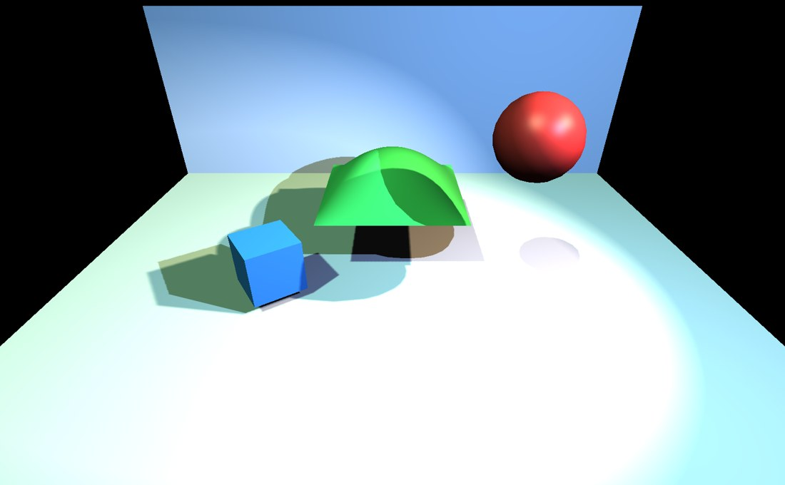

OpenGLContext renders dynamic, real-time shadows in the core profile. The same shadow system lights both the VRML97 core lighting shader and the PBR renderer, so shadows behave identically whichever you use. This document explains, from the ground up, how the shadows are made, why they sometimes look wrong, what each fix actually does, and how the different light types are handled.

tests/shadow_demo.py: three
coloured lights cast live shadows from moving objects onto the floor and
wall. Where an object blocks one light, its shadow is tinted by the others.A surface is in shadow when something blocks the light from reaching it. The trick real-time renderers use to work that out is shadow mapping: before drawing the scene from the camera, draw it once more from the light's point of view, and keep only the distance to the nearest surface the light can see. That depth image is the shadow map -- think of it as a photograph the light takes, recording "the closest thing in each direction".
When the visible scene is finally drawn from the camera, every lit point is tested: transform the point into the light's view, look up the stored nearest depth for that direction, and compare. If something was closer to the light than this point is, the light is blocked here and the point is in shadow. The depth-only pass uses a stripped-down position-only shader and writes no colour, but it does mean the scene geometry is drawn once per shadow-casting light in addition to the camera view -- so shadow cost grows with the number of shadow-casting lights and the amount of geometry.
Shadows are on by default in the core profile. Control them with environment variables:
| Variable | Effect |
|---|---|
OPENGLCONTEXT_SHADOWS |
shadows on/off (default on; 0/false/off disables) |
OPENGLCONTEXT_SHADOWS_SOFT=1 |
contact-hardening (PCSS) soft shadows for spot lights |
OPENGLCONTEXT_SHADOW_CASCADES=n |
pin the directional detail level instead of adapting to the frame rate |
A light casts a shadow when its castShadows field is set, which is
the default for all three light types; clear it on a light that should light
without occluding. Loaded glTF KHR_lights_punctual lights carry the
extension's own castShadows where it is given, and default to casting
for a sun.
The shadow map is an ordinary image with a fixed number of pixels (texels). One map has to cover everything the light illuminates. When the camera looks closely at a shadow edge, a single map texel can cover many screen pixels, so the edge steps along texel boundaries -- the classic blocky, stair-stepped shadow. It is exactly like zooming into a small photo.
There are two independent ways to attack this. Give the map more texels where they are needed, and blur the edge when reading it. Cascaded shadow maps (below) do the first for sun light; PCF and PCSS filtering (below) do the second. Neither is free: more resolution costs memory and fill time, and blurring costs extra samples per pixel.
The depth comparison has a precision problem. The stored depths are quantized to the map's texels, so a lit surface's own depth rarely matches the map exactly. Where the stored value lands just in front of the surface, the surface reports itself as blocking the light -- it shadows itself, producing a shimmer of dark speckles and stripes called shadow acne.
OpenGLContext combats acne with three cooperating nudges rather than one heavy one, which keeps the bias small enough to avoid peter-panning:
The values live in passes/shadowmixin.py
(SHADOW_POLYGON_OFFSET_FACTOR/UNITS, SHADOW_DEPTH_BIAS,
SHADOW_NORMAL_OFFSET) and the shader (_shadow_inc.glsl,
uniforms shadowBias / shadowNormalOffset); cube-map faces
get a little extra bias (CUBE_BIAS_SCALE). There is deliberately no
slope-scaled bias: the normal-offset covers the common cases, and slope-scaling can
be added per target if a low-precision GPU needs it. A per-light
shadowBias field lets a specific light override the default.
A well-known alternative acne fix is to draw only the back faces of
objects into the shadow map (front-face culling), so the self-shadowing error lands
on surfaces the camera cannot see. OpenGLContext tried this and
removed it: it silently dropped shadows from open or single-sided
casters -- a ground quad, a leaf card, a wall with one-sided geometry -- and,
stacked on top of the offsets above, over-biased into peter-panning. Instead the
depth pass draws all faces (culling is disabled for it) and each geometry
node still honours its own solid flag, so closed solids cull normally
and open shapes still cast. Where the driver supports it, depth clamping is also
enabled so a caster poking through the edge of the light's view still writes depth
instead of being clipped away.
The three light types cover space differently, so each uses a shadow technique suited to its shape. This is automatic; you do not choose it.
A sun lights the whole visible scene with parallel rays. Covering that entire area with one shadow map would spread its texels thin, and everything near the camera -- where you notice detail most -- would be blocky. Cascaded shadow maps (CSM) split the camera's view into a few depth slices and give each slice its own shadow map. The near slice covers a small area with a full-resolution map, so close shadows are crisp; distant slices cover more ground more coarsely, where it matters less.
The number of slices adapts to the frame rate so shadows stay smooth; pin it
with OPENGLCONTEXT_SHADOW_CASCADES when you need identical output every
run (see below).
Directional cascades use a fixed-width soft edge rather than the contact-hardening PCSS below: a sun is infinitely far away and has no finite size, so there is no distance-based penumbra to compute.
A spotlight illuminates a cone, which fits neatly inside one shadow map viewed along the spotlight's direction -- no cascades needed. Spot shadows can also soften with distance (see PCSS below).
A point light (a bare bulb) throws light in every direction, which no single flat map can capture. The renderer surrounds the light with a cube map: six shadow maps, one per face of a box, together covering all directions.
This is why point-light shadows are the expensive kind. A cube map costs six depth renders per frame and six times the memory of a single map, per light, and that memory grows with the square of the resolution -- so a "big" cube map gets costly fast. OpenGLContext keeps this in check by packing all the point lights' cubes into one cube-map array where the driver supports it, and by limiting how many lights cast shadows at once (below).
The plain depth test gives one hard yes/no per pixel, which is where the blocky edge comes from. Percentage-closer filtering (PCF) instead tests a few neighbouring texels and averages the results, turning the jagged boundary into a soft band a few pixels wide -- the cheap, always-on smoothing.
Real shadows are not uniformly soft, though: a shadow is sharp where an object
touches the ground and blurs as it gets farther from what cast it.
OPENGLCONTEXT_SHADOWS_SOFT=1 turns on percentage-closer soft
shadows (PCSS) for spot lights, which first estimates how far the blocker
is from the surface, then widens the blur with that distance, so contact points
stay crisp while distant shadow spreads out.
Every shadow map a light needs is a texture the fragment shader must sample, and those samplers compete for a fixed, small number of texture units -- as few as 16 on integrated graphics -- shared with the material and environment textures. The renderer cannot just assume "enough" exist.
So at start-up it asks the driver how many texture units it has
(GL_MAX_TEXTURE_IMAGE_UNITS) and works out how many lights can cast
shadows at once within that budget. That number is compiled into the shader as a
constant, so the shader always links and runs -- on a 16-unit laptop as well as a
32-unit workstation -- just with a different shadow-light ceiling. Spot and
directional maps are packed into one array texture, and point-light cubes into a
cube-map array where available, to spend as few units as possible.
The ceiling is MAX_SHADOW_LIGHTS, computed by
ShadowCapabilities.max_shadow_lights() (passes/shadowcaps.py),
capped at 4, and injected into the shader as a #define alongside a
SHADOW_CUBE_ARRAY flag (see shader
assembly). The GLSL lives in shaders/_shadow_inc.glsl, shared by
vrml97_lighting.frag and pbr.frag; its
resolveShadows() loop is unrolled to the compiled ceiling. If more
shadow-casting lights are present than the budget allows, only the first are
shadowed.
A skinned body is deformed in the vertex shader off a shared joint palette, so its vertex buffers hold the pose it was modelled in and nothing else. The depth shader carries the same skinning, and the depth pass hands it the same palette, so a walking figure casts the shadow of the stride it is in.
That holds whether the casters are drawn one at a time or collapsed into a single instanced draw. A batch of figures is one draw and many poses, so each instance names where its own joints start in the palette — exactly as the colour pass does. See rigged characters and instanced drawing.
Shadow storage is pooled in immutable depth textures allocated
once with glTexStorage*: a 2D array holding all spot maps and
directional cascades (ShadowMapArray), and a cube-map array (or a
single-cube fallback) for point lights (passes/shadowmap.py). The
depth textures are hardware comparison samplers
(GL_COMPARE_REF_TO_TEXTURE / GL_LEQUAL), so the 2×2
PCF tap is free in the sampler and the software kernel only adds the extra taps.
Cascade fitting (splitting the view frustum and fitting a light-space box to each
slice) is GL-free math in passes/shadowmath.py; the per-frame
orchestration and the adaptive cascade controller are in
passes/shadowmixin.py. Both the VRML97 core pass and the PBR pass
inherit this through ShadowMapMixin, which is why shadows are identical
between them. For the design discussion and what was deferred (for example variance
shadow maps), see the
shadow-mapping
plan.
Because the directional cascade count adapts to the frame rate, shadowed frames are not deterministic by default -- the same scene can render with a different number of cascades from run to run. For reference-image tests, pin the count:
OPENGLCONTEXT_SHADOW_CASCADES=3 python your_test.py
This bypasses the frame-rate probe so the shadow output is identical every run.
Two step-by-step tutorials build a depth-mapped shadow renderer from scratch -- the best way to understand the technique this document describes. They use the older fixed-function / ARB path, the direct ancestor of the core-profile system:
To see the shadow system built into OpenGLContext in use -- rather than implemented by hand -- run the demo pictured at the top of this page: animated occluders and moving coloured lights casting live shadows onto a floor and wall.
python tests/shadow_demo.py
Add OPENGLCONTEXT_SHADOWS_SOFT=1 for soft shadows, or
OPENGLCONTEXT_SHADOWS=0 to compare with shadows off. The
source
shows how little it takes: build a scenegraph with lights and geometry on a
core-profile context, and the shadows are handled for you.